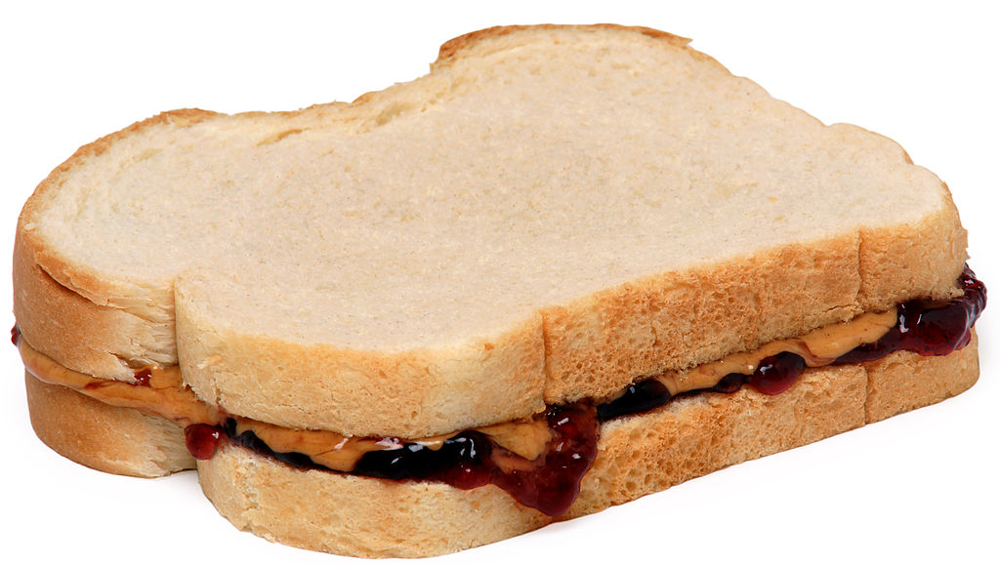

Peanut Butter and Jelly Sandwich

How to make a superb peanut butter and jelly sandwich
Continue reading below for instructions on how to make a simple peanut butter and jelly sandwich. First we'll start with the ingredients then move onto the required steps for assembly!
Things needed:
- Bread of your choice (I suggest white bread)
- Peanut butter
- Strawberry jam
- A knife
- A plate
Assembly:
- First take out two slices of your bread.
- Remove the lid from your peanut butter and spread a good layer on both pieces of bread using your knife
- Next, spread your favorite jam on top of the peanut butter on one of the bread slices
- Put the slice with only peanut butter on top of the slice that has jam and peanut butter
- Optionally: Cut the sandwich in half (rectangle or triangle)
- EAT!